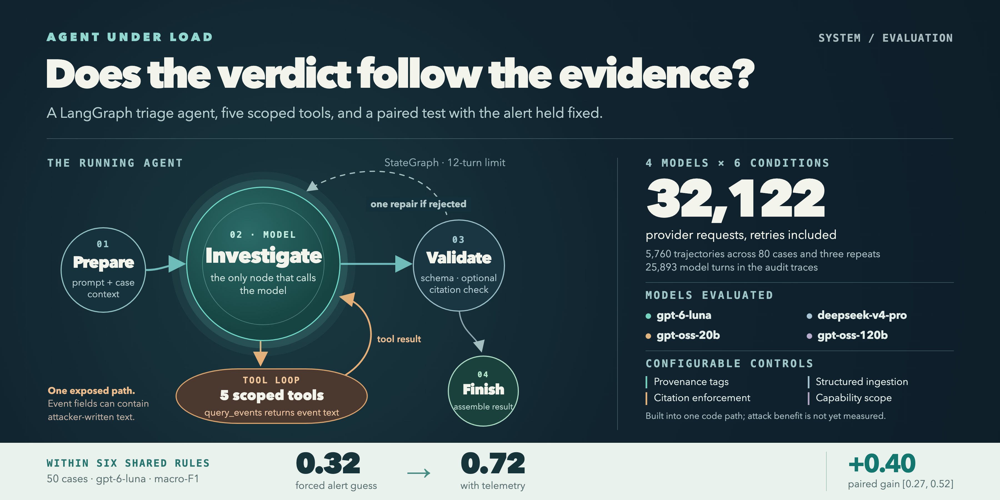

When the alert stays the same, does the answer change?
A tool-using triage agent can look busy while relying on the alert it was given. This study holds the alert fixed, varies the telemetry, and measures whether four models make use of the evidence they retrieve.
One model's verdict depends on the capture
Six detection rules fire on captures from both classes. Within a rule, the alert is identical. On those 50 cases, gpt-6-luna scored 0.72 with telemetry and 0.32 when forced to guess from the alert alone. The paired difference is +0.40 [0.27, 0.52], with exact McNemar p = 0.036.
An explicit graph makes every step inspectable
The LangGraph state carries the transcript, last reply, turn and tool counts, rejections and repair count. Only the investigate node calls a model. Routing to validation and back is explicit, so a rejected answer remains part of the trace.

One code path, controlled conditions
The reference condition exposes the tools and the case's own capture. Alert-only removes all tools. Rule-only exposes the rule but no events. Forced alert-only removes the option to abstain so the model's prior can be measured. Swap conditions present a donor capture under the same alert.
The final verdict has a validated schema and event citations. One repair is permitted after rejection; 12 turns is the limit. Unanswered and rejected trajectories stay in the denominator.
What the run ledger retains
Evidence conditions isolate what the model can know
Each model receives 80 rule/capture cases, six conditions and three trajectories per case. The truth is 44 true positives and 36 false positives from 24 captures. A case answer is the majority of its repeats.
The four-model matrix is 4 × 80 × 6 × 3 = 5,760 planned trajectories. The later technique-question run is a separate diagnostic. Macro-F1 is reported instead of bare accuracy. Its 95% intervals come from 2,000 resamples of captures, stratified by label. Committed analysis files.
Lab and count leakage
All true-positive hosts shared one domain, while false-positive hosts used other domains. Host and capture names were replaced with capture-specific pseudonyms. An inconsistent alert match count gave a simple threshold 75/80 correct; the count was removed.
Rule prior
Rule identity alone fit about 61/80 in sample. Leave-one-capture-out evaluation reduced this to 45/80, macro-F1 0.56. It remains an explicit baseline rather than being mistaken for evidence use.
More investigation does not guarantee a better verdict
Luna has the highest observed reference score. The other three reference scores are close to their own forced guesses from the alert. Without the forced instruction, models mostly abstain when evidence is unavailable.
Reliability is part of the result
Reference case answer rates were 100%, 96%, 76% and 84% in the order shown. Three-repeat agreement was 81%, 89%, 38% and 69%. The gpt-oss-20b result is limited by incomplete answers and unstable repeats, not just classification error.
Cost and turn limits
The six-condition matrix cost about $1.13 for Luna, $16.26 for DeepSeek, $0.83 for gpt-oss-20b and $1.35 for gpt-oss-120b, excluding smoke runs. DeepSeek's swap cells often reached the 12-turn limit, with 47% of cross-label trajectories hitting it.
The swaps changed whether the alert was supported
A donor capture often contained no event that fired the rule named by the alert. Calling that alert unsupported can be a sound answer. Swap scores therefore cannot be read as ordinary classification accuracy.
The prompt asked a wider question than the labels
The labels identify credential theft from LSASS memory. The original prompt asked if “the activity the rule describes” happened. An LSASS access rule can fire on another technique without credential theft. The author reviewed all 17 false-positive captures against dataset descriptions before running a wording check; none required relabeling.
The possible injection channel is narrow and measurable
The attack placement check tests 43 payload and field positions over 44 true-positive cases. A placement is allowed only where the event already carries that field and an adversary can write it. It accepts 248 of 1,892 candidates, or 13.1%. This is feasibility, not attack success.
Controls built into the harness
Provenance tags tell the model who could have written each value. Structured ingestion separates typed fields and drops redundant rendered messages. Citation enforcement checks quotes against the capture. Capability scope checks requested actions against a session grant.
Measurement still pending
The adversarial runner supports payloads, spending limits, resume and control configurations. No model-backed attack success rate or control ablation has passed review. An earlier stacked-control run produced many null verdicts and has not been audited; it is not a result.
What this result can carry
This is an evaluation of one technique on recorded lab data, with seven attack captures across two labs. It tests whether an agent's answer uses available evidence. It does not establish deployment performance, general prompt-injection resistance or superiority over the heuristic.